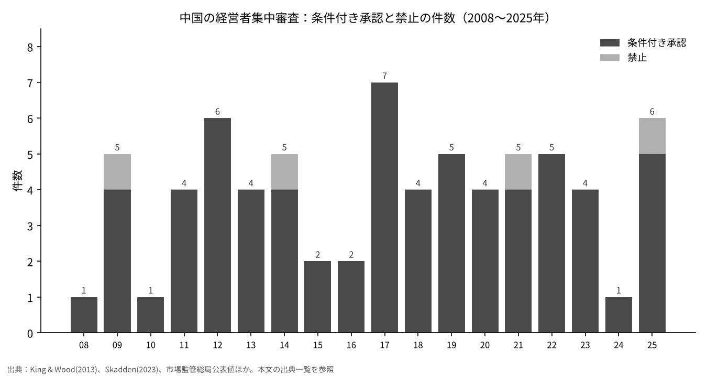
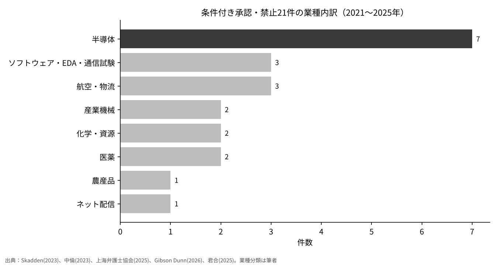

中国当局はなぜM&Aを止めるのか――ソフトバンクG・ABB案件を中国の審査記録の中に置く
2026年11月5日、スイスのABBは、ソフトバンクグループ（SBG）による同社ロボット事業の買収を中国当局が禁止したとSBGから通知を受けたと公表した[1]。
本稿の問いは、中国の独占禁止審査で海外企業が関わる買収が「不許可」や「条件付き承認」になった案件は、どの業種・どの時期に集中しているか、である。
2008年から2025年までに公表された制限的な決定71件を年別・業種別に並べ、今回の案件がその記録のどこに位置するのかを確かめる。
- 2008〜2025年の制限的な決定は条件付き承認67件と禁止4件の計71件で、年1〜7件の範囲に収まり、件数が一方向に増え続けている傾向は見られない。ただし審査件数あたりの比率は2014年の2.0%から2025年の0.85%へ下がっている。
- 業種では半導体への集中が強まっている。2021〜2025年の21件のうち半導体は7件（33%）で最も多く、ソフトウェア・EDA・通信試験を加えると10件（48%）になる。2020年までの累計では48件中10件（21%）だった。
- ABB案件を禁止したのは独占禁止審査ではなく、外商投資安全審査の工作機制弁公室である（ABB発表）[1]。独禁の決定記録71件にこの経路の案件は含まれず、記録だけを見ると「止まる」リスクの一部しか測れない。

問いと背景
SBGは2025年10月8日、ABBのロボット事業を企業価値53億7500万ドル（約8187億円）で取得すると発表した。完了には欧州連合・中国・米国の規制当局の承認が必要で、2026年半ばから後半の完了を予定していた[2]。ABBによると、同事業の2024年売上高は23億ドルでグループ売上の約7%、従業員は約7000人である[3]。2026年11月5日のABBの発表は、SBGからの通知として、中国の外商投資安全審査の工作機制弁公室が買収を禁止したと伝え、両社は取引の実現に向けて対話を続けるとしている[1]。共同通信も同日、同じ内容を報じている[4]。
ここで用語を整理しておく。経営者集中審査とは、合併や株式取得などで企業の支配関係が変わる取引について、競争を排除・制限するおそれがないかを当局が事前に調べる手続きである[5]。SAMR（国家市場監督管理総局）は、現在この審査を担う中国の行政機関で、以前は商務部（MOFCOM）が担当していた。条件付き承認とは、取引を禁止しない代わりに、事業の売却や供給継続の約束など競争への悪影響を減らす条件を付けて認める決定である[5]。
独占禁止法は、競争を排除・制限する効果がある集中を禁止すると定め（第34条）、外資による買収が国家安全に関わる場合は別に国家安全審査を行うと定めている（第38条）[5]。その国家安全審査の規則である外商投資安全審査弁法（2020年12月19日公布、2021年1月18日施行）は、工作機制弁公室を国家発展改革委員会に置き、重要技術などの分野で外国投資家が実質的な支配権を得る投資を対象として、特別審査のあとに禁止や条件付きの通過を決められるとしている[6]。つまり中国でM&Aが止まる経路は少なくとも二つある。本稿はまず独禁審査の記録を調べ、そのうえで今回の案件の位置を考える。
データと方法
対象は、2008年8月の独占禁止法施行から2025年末までの条件付き承認と禁止の決定である。年別の件数は次の資料から組み立てた。2008〜2012年はKing & Woodの一覧[7]、2013〜2022年はSkaddenの表から読み取った値[8]、2016年の2件は商務部の年次発表を伝えた記事[9]、2023年は審結797件・条件付き4件というSAMRの公表値[10]、2024年の条件付き1件は上海市弁護士協会の報告[11]、2025年の審査完了706件・条件付き5件・禁止1件は新華社が伝えたSAMRの発表[12]による。
組み立てた系列が累計値と合うかを確かめた。2019年末の条件付き44件（立方律師事務所）[13]、2020年末の48件（Xue & Gu）[14]、2022年末の条件付き57件・禁止3件・無条件4760件（Hu & Gongの論文）[15]と、いずれも一致した。
業種は、2021〜2025年の21件（条件付き19件、禁止2件）を案件ごとに分類した。案件名はSkadden[8]、中倫律師事務所[16]、SAMR[10]、上海市弁護士協会[11]、Gibson Dunn[17]、君合律師事務所[18]から取った。分類は筆者によるもので、半導体の範囲はSkaddenの区分に合わせた。
結果

年別に見ると、件数は年1〜7件で推移している。最多は2017年の7件で、2012年の6件、2025年の6件（禁止1件を含む）が続く。2024年は1件にとどまった。禁止の4件は、2009年のコカ・コーラによる匯源の買収、2014年の海運3社によるP3ネットワーク、2021年の虎牙と闘魚の合併、2025年の塩酸パパベリン原料薬企業による注射剤企業の買収である[18]。2025年の禁止は、届出基準に満たない取引を審査し、実施済みの集中を元の状態に戻させた初めての事例とされる[18]。
件数は横ばいでも、分母である審査件数は増えた。制限的な決定の比率は、2014年が審結245件中5件で2.0%[19]、2023年が797件中4件で0.50%、2025年が706件中6件で0.85%である[10][12]。Emch と Lyu は、2022年8月の法改正の前は約1.2%、後は約0.6%と見積もっている[20]。

業種には時期による違いがある。2008年から2013年上半期の19件は、飲料・化学・医薬・自動車・電機・小売など製造業を中心に幅広く分かれていた[7]。2021〜2025年の21件では、半導体7件、ソフトウェア・EDA・通信試験3件、航空・物流3件、産業機械2件、化学・資源2件、医薬2件、農産品1件、ネット配信1件となった。
海外企業の関わりも大きい。SAMRによると、2023年の審結案件の46%に外資企業が参加し[10]、2025年も無条件承認案件の43.2%に外資企業が参加していた[12]。2024年に唯一の条件付き承認となったJX金属によるタツタ電線の株式取得は、当事者が2社とも日本企業である[11]。
記録に出てこない形で止まった取引もある。Intelは2023年8月16日、合意に必要な規制当局の承認を期限内に得られなかったとして、Tower Semiconductorの買収を終了し、3億5300万ドルの解約金を支払うと発表した[21]。こうした「時間切れ」は、決定の件数には数えられない。
感度分析
半導体の比率は、案件の定義と期間の取り方で大きく変わる。六つの定義で計算し直した。
| 定義・期間 | 半導体の件数 | 分母 | 比率 |
|---|---|---|---|
| A 2011〜2020年、条件付きのみ | 10 | 42 | 23.8% |
| B 2008〜2020年、条件付き＋禁止 | 10 | 50 | 20.0% |
| C 2021〜2025年、条件付き＋禁止 | 7 | 21 | 33.3% |
| D 2021〜2025年、条件付きのみ | 7 | 19 | 36.8% |
| E 2021〜2022年、条件付きのみ | 5 | 9 | 55.6% |
| F 2021〜2025年、半導体＋ソフトウェア・EDA・通信試験 | 10 | 21 | 47.6% |
比率は20.0%から55.6%まで開く。期間を短くするほど高くなるのは、分母が小さいためである。それでも、どの定義を取っても2021年以降の比率は2020年以前の比率を上回っている。半導体への集中が強まったという結論は、定義を変えても残る。一方で、2024年のように年1件しかない年もあり、年ごとの比率で語ると振れが大きくなる。
考察
半導体に集中する理由としてよく挙げられるのは、中国が半導体の大口の買い手で、海外企業同士の取引でも中国の顧客への供給が論点になりやすいことである。Herbert Smith Freehills Kramerの論文は、2018〜2024年の条件付き承認26件のうち24件が行動措置を含み、9割超に供給の保証が入っていたとする[22]。この数字は、条件の中心が「中国の顧客に売り続けること」にあることを示している。
反対の見方もある。独禁審査は産業政策や対外交渉の手段として使われているという見方がある一方で、2022年末までの決定の98%超は無条件承認であり[15]、半導体への集中は寡占的な市場構造で説明できるという見方もある。本稿のデータは件数と業種しか扱っていないため、どちらの見方が正しいかを決めることはできない。
ABB案件は、この独禁の記録とは別の経路で止まった。報道では2026年2月に独禁審査を通過していたとされるが[23]、本稿では一次資料で確認できていない。禁止の理由はABBもSBGも公表しておらず、報道はデータ移転への懸念などを匿名の情報源として伝えるにとどまる[23]。
データには限界がある。第一に、届出の撤回や断念は件数に入らない。2023年には受理後の撤回が11件あった[10]。第二に、2013〜2022年の年別件数は二次資料からの再構成である。第三に、業種の分類は筆者による。第四に、外商投資安全審査の決定は公表されず、件数の統計がない。第五に、2026年のABB案件は、ABBの発表と報道以外では確認できていない。
結論を変えうる証拠としては、撤回案件の業種別の公表、外商投資安全審査の件数の公表、2026年以降の条件付き承認で半導体以外の業種が多数を占めることなどが考えられる。
結論
中国の独禁審査で制限的な決定となった案件は、時期で見ると年1〜7件で大きな偏りはなく、審査件数に対する比率はむしろ下がっている。業種で見ると、2021年以降は半導体に集中しており、定義を変えても2020年以前より高い。ただしABB案件のように安全審査で止まる取引はこの記録に現れず、独禁の件数だけで中国でのM&Aの止まりやすさを測ることはできない。
僕はこう見ている
僕は、国の許可で取引が止まるリスクを細かく見積もったことはない。そういう事業はなるべくやらないようにしていて、カントリーリスクや政治リスクがない事業をやろうと思っている。僕が営んでいるのは日本国内の飲食店、シェアオフィス、不動産の事業で、持っているのは日本の銀行株と米国株である。今回の記録を並べてみて、止まる経路が独禁審査と安全審査の二つあり、後者は件数すら見えないことがわかった。見えないリスクは見積もりようがない。だから僕は、そのリスクを細かく測るより、最初から距離を置くという今のやり方を続けるのだと思う。
参考文献
- ABB, "Update on divestment of ABB Robotics", 2026-11-05, https://www.abb.com/global/en/news/140154/update-on-divestment-of-abb-robotics
- ソフトバンクグループ, "Acquisition of ABB Ltd's Robotics Business", 2025-10-08, https://group.softbank/en/news/press/20251008
- ABB, "ABB to divest Robotics division to SoftBank Group", 2025-10-08, https://www.abb.com/global/en/news/129685/abb-to-divest-robotics-division-to-softbank-group
- 共同通信, ABBロボット事業買収に関する配信記事（OANDA Lab マーケットニュース掲載）, 2026-11-05, https://www.oanda.jp/lab-education/market_news/kn_2026110501001851/
- 全国人民代表大会常務委員会,『中華人民共和国反壟断法』（2022年6月24日改正）, JETRO掲載, https://www.jetro.go.jp/ext_images/world/asia/cn/ip/law/pdf/origin/regulation20220801.pdf
- 国家発展改革委員会・商務部,『外商投資安全審査弁法』（令第37号）, 2020-12-19, https://www.mofcom.gov.cn/dl/file/20211203230801.pdf
- Susan Ning, Hazel Yin, Ziqing Zheng, Kailun Ji（King & Wood）, "Review of Merger Control and Merger Remedies Regime in China: From 2008-2013", 2013-08-23, https://www.chinalawinsight.com/2013/08/articles/compliance/review-of-merger-control-and-merger-remedies-regime-in-china-from-2008-2013/
- Andrew L Foster, Kexin Li, Julia Zhu（Skadden）, "China: Recent Remedy Cases Showcase Impact of Amended Anti-Monopoly Law", 2023-10-25, https://www.skadden.com/-/media/files/publications/2023/10/china_recent_remedy_cases_showcase_impact_of_amended_anti_monopoly_law.pdf
- China Law & Practice, "MOFCOM recaps 2016 merger reviews", 2017-02-09, https://chinalawandpractice.com/2017/02/09/mofcom-recaps-2016-merger-reviews
- 国家市場監督管理総局（中国質量報転載）,「2023年市場監管総局経営者集中案件審査情況解読」, 2024-01-25, https://m.cqn.com.cn/zj/content/2024-01/25/content_9023492.htm
- 上海市律師協会 反壟断与反不正当競争専業委員会,「2024年度経営者集中反壟断審査執法分析報告（上）」, 2025-12-12, https://www.lawyers.org.cn/info/7b76cb8cd0b846c7950920a70a01376a
- 新華社,「2025年市場監管総局完成経営者集中反壟断審査706件」, 2026-01-29, https://www.news.cn/20260129/c40f383543014195a6ca15f4406524f9/c.html
- 立方律師事務所,「2019反壟断年度盤点系列（三）――中国附条件批准経営者集中案件盤点」, 2020-03-11, https://www.lifanglaw.com/cn/cnflds/574.html
- Yi (Josh) Xue, Tian Gu（Zhong Lun）, "China: Tougher Merger Control Enforcement in the Semiconductor Industry?", CPI Antitrust Chronicle, 2021-03, https://www.competitionpolicyinternational.com/wp-content/uploads/2021/03/6-China-Tougher-Merger-Control-Enforcement-in-the-Semiconductor-Industry-By-Yi-Josh-Xue-Tian-Gu.pdf
- Shengyan Hu, Jiong Gong, "Understanding merger control remedies in China", PLOS ONE 20(11): e0336795, 2025-11-21, https://journals.plos.org/plosone/article?id=10.1371/journal.pone.0336795
- 余昕剛ほか（中倫律師事務所）,「久違春風添暖意――中国反壟断2022年度盤点」, 2023-01-03, https://www.zhonglun.com/research/articles/9403.html
- Gibson Dunn, "Antitrust in China – 2025 Year in Review", 2026-03-30, https://www.gibsondunn.com/antitrust-in-china-2025-year-in-review/
- 許蓉蓉・楊晨・劉煜成（君合律師事務所）,「六年交易追溯被禁：首例未達申報標準被禁止集中案件評述」, 2025-07-25, https://junhe.com/legal-updates/2750
- 商務部（made-in-china.com転載）, "2014 Business Review XVIIII: Carry out Anti-monopoly Work According to Law and Maintain a Market Order with Fair Competition", 2015（掲載日は未確認）, https://resources.made-in-china.com/article/policy-opinion/vnLxDVBlvmiu/2014-Business-Review-XVIIII-Carry-out-Anti-monopoly-Work-According-to-Law-and-Maintain-a-Market-Order-with-Fair-Competition
- Adrian Emch, Qing Lyu, "The year in review – a close look at China's merger control since the amendment of the Anti-Monopoly Law", 2024-01-25, https://www.hlc.com/en/publications/the-year-in-review-a-close-look-at-chinas-merger-control-since-the-amendment-of-the-anti-monopoly-law
- Intel, "Intel Announces Termination of Tower Semiconductor Acquisition", 2023-08-16, https://www.intc.com/filings-reports/all-sec-filings/content/0000050863-23-000078/titaniumpressrelease.htm
- Adelaide Luke, Howard Chan, Hazel Xu（Herbert Smith Freehills Kramer）, "Shifting tides of China's merger control regime: the role of national and industrial policy in merger reviews and remedy design", Competition Law International 21(2), 2025-12, https://www.ibanet.org/document?id=cli-december-2025-article-5
- Silicon Republic, "China blocks SoftBank's $5.4bn ABB robotics unit acquisition", 2026-11-05, https://www.siliconrepublic.com/business/china-softbank-abb-robotics-japan-data-ai-investment
図はYUKI CAPITALが作成。トップ画像：Simon Kadula（Unsplash）
日々の数字と判断は、Xで記録している。